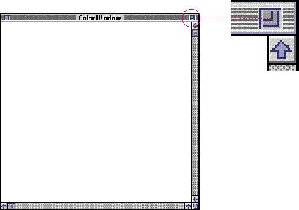
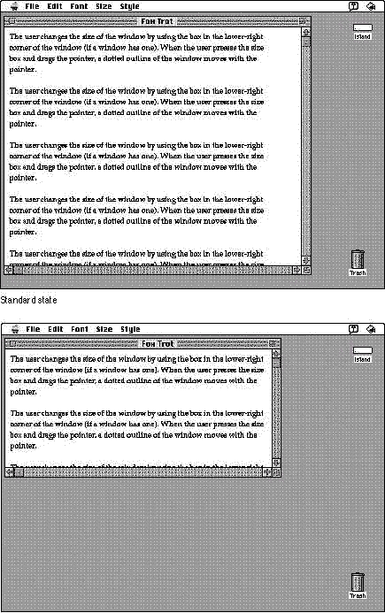

|
The Zoom Box and Window BehaviorYour application sets values for the initial size and position of a window. This is called the standard state of the window. The user can change the size and location of the window to a state that is more useful or convenient, the user state. The user can then toggle between the standard state and the user state by using the zoom box. Figure 5-38 shows an enlarged view of the zoom box. Using the zoom box, the user can quickly manipulate windows to have access to other icons or windows or to look at a document in a larger size or different location. The user must drag or resize a window at least seven pixels to cause a change in the user state. A window's standard state depends on the size and location that are best suited to working on the document. Macintosh monitors come in many sizes, and multiple monitors can be configured in many different ways, so applications should never simply assume that the standard state should be as large as the screen. Frequently the monitor is larger, sometimes much larger, than the most useful size for a window. Screen real estate is valuable, so use screen-sized windows only when they make sense. Figure 5-39 shows the standard state and the user state of a window on the same size screen. Figure 5-39 The standard state and the user state of a document  A document for a word-processing program has a well-defined most useful width (the width of a page) and most useful height (the height of the screen). Therefore the width of the standard state should be the width of a page or the width of the screen, whichever is smaller. (When determining the width of the standard state, it's a good idea to leave room on the right side of larger monitors so that desktop icons are not obscured when the user switches to the Finder.) The height of the standard state should be the height of the screen or the length of a page, whichever is smaller. When a user clicks the zoom box to change a window from the user state to the standard state, first determine the appropriate size of the standard state. Move the window as little as possible to make it the standard size, and keep the window on the screen. Zooming behavior in multiscreen environments should not violate any of the guidelines described in this chapter, but it does introduce one additional guideline. The standard state should be on the monitor containing the largest portion of the window, not necessarily on the monitor with the menu bar. This means the standard state for a single window may be on different monitors at different times if the user moves the window around. In any case, the standard state for any window must always be fully contained on a single screen. The user can't change the standard size and location of a window, but your application can change the standard state when appropriate. For example, a word processor might define the standard size and location as wide enough to display a document whose width is specified in the Page Setup dialog box. If the user specifies a wider or narrower document, the application might change the values for the standard state to reflect that change. As described in the section "Window Positions," earlier in this chapter, open a window in the last state it was in when possible. Your application must make sure that the user state fits on the current screen. That is, if the window was previously open on a different screen, you need to determine the correct size and location for the current screen. Don't open a window off of a user's screen. |